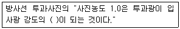
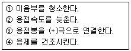

방사선비파괴검사산업기사(구) (2004-03-07 기출문제)
1과목: 방사선투과검사 시험
1. 두꺼운 동판을 투과한 좁은 X선속의 선량율이 200mR/h일때 두께 10mm의 동판을 가했더니 100mR/h가 되었다. 여기에 또 5mm 두께의 동판을 가하면 투과 선량율은?
- 약 50 mR/h
- 약 71 mR/h
- 약 85 mR/h
- 약 100 mR/h
(정답률: 알수없음)

2. 다음 중 방사선 가중인자(Radiation weighting factor)가 가장 큰 방사선은?
- X선
- α선
- β선
- 중성자선
(정답률: 알수없음)
3. 투과사진의 상질 구비 조건에 해당하는 식별한계 콘트라스트를 바르게 설명한 것은?
- 식별한계 콘트라스트는 미세한 결함의 검출능력을 말한다.
- 피사체 콘트라스트가 감소하면 식별한계 콘트라스트는 증가한다.
- 식별한계 콘트라스트와 투과사진 콘트라스트가 같으면 결함은 식별된다.
- 느린 필름의 경우 피사체 콘트라스트가 작아지므로 식별한계 콘트라스트는 증가한다.
(정답률: 알수없음)
4. 알루미늄 재료에 적용할 수 없는 비파괴검사법은?
- 침투탐상검사
- 자분탐상검사
- 초음파탐상검사
- 와전류탐상검사
(정답률: 알수없음)
5. γ선과 물질과의 상호작용에 관한 설명으로 틀린 것은?
- 콤프턴산란과 전자쌍생성은 연속 스펙트럼이다.
- 전자쌍생성이 일어나기 위해서는 입사광자의 에너지는 최소 1keV이다.
- 광전효과가 원자번호의 의존성이 가장 크다
- 전자쌍생성의 경우 감쇠계수는 에너지가 증가함에 따라 대략 지수함수로 증가한다.
(정답률: 알수없음)
6. 비파괴검사의 역할이라고 볼 수 없는 것은?
- 일정한 품질수준을 유지하기 위하여
- 보다좋은 생산품의 design을 위하여
- 고가품의 상품을 만들기 위하여
- 고객의 만족을 확산시키기 위하여
(정답률: 알수없음)
7. 반가층이 12.7mm인 어떤 방사성동위원소가 있다. 이 선원으로부터 방사선량율이 128mR/h인 장소에서 2mR/h로 줄이는데 요하는 차폐체의 두께(mm)는?
- 38.1
- 50.8
- 63.5
- 76.2
(정답률: 알수없음)
8. 시험체의 얇은 부분을 통과하여 필름 홀더나 카셋트에 도착된 일차 방사선이 이웃하는 두꺼운 부분의 안쪽으로 산란이 되어 필름에 나타나는 현상을 무엇이라 하는가?
- 정전마크
- 언더컷
- X선 회절
- 기하학적 불선명도
(정답률: 알수없음)
9. 주어진 농도를 얻는데 필요한 선량에 대한 필름의 감도는 조사방사선의 파장에 크게 의존한다. 다음 중 농도 1.0을 얻는데 가장 적은 선량이 필요한 kVp는? (단, Heavy Filteration의 경우)
- 20kVp
- 50kVp
- 100kVp
- 400kVp
(정답률: 알수없음)
10. 선원-필름간 거리를 감소시켰을 때 다음 중 어떠한 경우에 처음과 같은 질의 투과사진을 얻을 수 있겠는가?
- 노출시간을 증가시킨다.
- 속도가 빠른 필름을 사용한다.
- 선원의 크기가 작은 것을 사용한다.
- 연박증감지를 두꺼운 것을 사용한다.
(정답률: 알수없음)
11. 다음 중 γ선의 방사선 선질은?
- 동위원소의 종류에 의해 결정된다.
- 동위원소의 강도에 의해 결정된다.
- 노출시간에 의해 결정된다.
- 필름의 종류에 의해 결정된다.
(정답률: 알수없음)
12. 다음 ( )안에 넣을 적절한 수치는?

- 1/4
- 1/10
- 1/20
- 1/100
(정답률: 알수없음)
13. 다음 결함중 방사선 투과사진으로 검출하기 가장 어려운 것은?
- 기공
- 슬래그
- 용입부족
- 라미네이션
(정답률: 알수없음)
14. 초음파탐상시험의 압축파에 대한 다른 명칭은?
- 횡파
- 종파
- 표면파
- 판파
(정답률: 알수없음)
15. 높은 운동에너지를 가진 음전자가 원자의 핵 쿨롱장(Couloumb Field)내를 통과할 때 이 음전자의 에너지 손실에 의해 발생하는 방사선은?
- γ-선
- 양전자
- 특성 X-선
- 제동 X-선
(정답률: 알수없음)
16. 방사선투과사진 필름의 판독결과에 대한 보고서에 포함되지 않아도 무방한 사항은?
- 검사시방서
- 촬영기법
- 결함에 관련된 정보
- 시험체의 사용목적
(정답률: 알수없음)
17. 전파(電波)와 음파(音波)를 비교한 것으로 틀린 것은?
- 음파는 전파에 비하여 진행속도가 느리다.
- 음파는 진공 중에서는 진행할 수 없지만, 전파는 진공 중에서도 진행한다.
- 주파수가 낮은 음파는 공기 중을 진행할 수 없다.
- 극히 낮은 주파수의 전파가 아니면 수중에서 진행되지 못하지만, 음파는 수중에서 잘 진행된다.
(정답률: 알수없음)
18. 선형 투과도계를 사용할 경우 가는 선이 용접부의 바깥쪽으로 가게 하는 직접적인 이유는?
- 시험부의 유효 길이 내에서 안전측으로 평가하기 위하여
- 기하학적 불선명도를 최소한으로 하기 위하여
- 필름의 상질을 증가시키기 위하여
- 배치가 쉽고 필름 콘트라스트를 증가시키기 위하여
(정답률: 알수없음)
19. 방사선의 강도를 처음의 10분의1로 감소시키는데 필요한 물질의 두께를 무엇이라 하는가?
- 반감기
- 반가층
- 1/10가층
- 흡수율
(정답률: 알수없음)
20. 방사선투과시험에서 X선 필름 이외의 투과사진의 상질을 관리하기 위해 사용되는 것은?
- 노출계와 농도계
- 농도계와 계조계
- 투과도계와 계조계
- 노출계와 투과도계
(정답률: 알수없음)
2과목: 방사선투과검사 시험
21. 방사선투과시험시 선원에서 필름까지의 거리가 120cm일때 노출시간이 60초 였다면 같은 조건에서 선원에서 필름까지의 거리를 150cm로 하면 노출시간은 얼마로 주어야 하는가?
- 34초
- 42초
- 72초
- 94초
(정답률: 알수없음)
22. 동일한 강도의 방사성 동위원소가 각각 γ선 조사장치에 장전되어 있을 때 다음 중 촬영 조건을 바꾸지 않고 두꺼운 시험체를 가장 단시간에 촬영할 수 있는 원소는?
- Co-60
- Cs-137
- Ir-192
- Tm-170
(정답률: 알수없음)
23. X선 발생장치를 이용한 방사선투과검사에서 어떤 시험체를 FFD 60cm, 150kVP, 18mA-min의 조건으로 양호한 사진을 얻었다. 동일 조건하에서 FFD를 40cm로 할 경우 노출시간은 몇 분을 주어야 하는가? (단, 관전류는 4mA)
- 4분
- 3분
- 2분
- 1분
(정답률: 알수없음)
24. 두께가 두꺼운 금속에 대하여 방사선투과검사시에 연박증감지 또는 금속형광 증감지를 사용한다. 이 때 사용되는 금속형광 증감지의 특성을 잘못 설명한 것은?
- 감광원은 형광 또는 2차 전자이다.
- 증감율은 10∼30배 정도이다.
- 선명도가 매우 좋다.
- 산란선을 방지하여 준다.
(정답률: 알수없음)
25. X선 빔의 방향에 따라 두께 차이가 나는 봉 시험체의 피사체 콘트라스트를 줄여 좋은 상질을 얻기 위한 방법은?
- 낮은 관전압으로의 촬영
- 확대 촬영
- 후방 산란선의 사용
- 감도 차이가 나는 이중 필름의 사용
(정답률: 알수없음)
26. 방사선원과 시편간거리가 같을 때 결함의 기하학적 불선 명도(ug)가 가장 큰 것은?
- 시편두께가 20mm이고 결함의 위치가 표면에서 1/2愾
- 시편두께가 5mm이고 결함의 위치가 표면에서 1/4愾
- 시편두께가 5mm이고 결함의 위치가 표면인 결함
- 결함 위치와 무관
(정답률: 알수없음)
27. 한개의 카세트에 두개 이상의 필름을 넣고 방사선투과시 험하는 일차적인 목적은?
- 산란선을 방지하기 위하여
- 필름의 감도를 비교하기 위하여
- 부정확한 투과사진의 노출시간을 보정하기 위해서
- 한번의 노출로 두께, 범위가 다른 시험편을 전부 시험하기 위하여
(정답률: 알수없음)
28. X선관과 시험체 사이에 설치한 필터는 어떤 작용에 의해 산란 방사선을 감소시킬 수 있는가?
- 방사선의 강도를 줄임으로써
- 후방산란선을 줄임으로써
- 일차 방사선의 파장이 긴 부분을 흡수하므로써
- 일차 방사선의 파장이 짧은 부분을 흡수하므로써
(정답률: 알수없음)
29. X선 투과상을 형광판에서 가시상으로 변환하여 카메라 등으로 필름에 촬영하는 방법은?
- 형광 증배관법
- 직접 촬영법
- 간접 촬영법
- 투과 사진법
(정답률: 알수없음)
30. 방사선 투과사진에 전체적으로 얼룩덜룩한 자국이 나타났을 때 예상되는 인위적 결함의 원인은?
- 정전기 자국
- 현상중 필름접촉
- 외부 빛에 의한 감광
- 필름보호 간지의 자국
(정답률: 알수없음)
31. 150∼400kVp 정도의 X선 발생장치로 방사선투과시험을 할때 다음 물질 중에서 산란선을 제거하기 위해 필름의 앞, 뒤면에 사용되는 것은?
- 알루미늄
- 카드뮴
- 종이
- 납
(정답률: 알수없음)
32. 여러 종류의 공업용 X선 필름을 현상할 때 정착후의 수세는 수세탱크의 물이 계속적으로 새로운 물로 순환되어야 한다. 이 순환되는 비율은 매 시간당 탱크 용량의 몇 배 정도가 적당한가?
- 1 ∼ 1.5배
- 2 ∼ 3배
- 4 ∼ 8배
- 15 ∼ 20배
(정답률: 알수없음)
33. 철구조물의 방사선투과사진에서 밝은 점(light spot)으로 나타나는 결함은?
- 기공(Gas hole)
- 텅스텐 혼입(Tungsten inclusion)
- 용입부족(Inadequate penetration)
- 균열(Crack)
(정답률: 알수없음)
34. 납스크린에서 순수한 납 대신에 6% 안티몬과 94%의 납으로 된 납합금 재료를 증감지로서 사용하는 주된 이유는?
- 명료도를 높이기 위해서
- 마모저항을 높이기 위해서
- 반점효과를 줄이기 위해서
- 증감효과를 높이기 위해서
(정답률: 알수없음)
35. 주물품에 대한 방사선투과검사시에 직면하는 문제점을 열거한 것이다. 바르게 설명된 것은?
- 동위원소의 선정은 강도가 일정하므로 영향을 미치지 않는다.
- 주물품의 전부분을 검사하는데에는 형상이 다종,다양 하므로 각별한 주의를 요한다.
- 주물품에 대한 검사시기는 그다지 큰 영향을 미치지 않으므로 최종검사가 바람직하다.
- 주물품에 대한 투과사진의 판독은 반드시 대비필름과 비교하여 행해야 한다.
(정답률: 알수없음)
36. 필름특성곡선에 대한 설명이다. 잘못된 것은?
- 기울기는 필름콘트라스트에 영향을 준다.
- 필름의 속도(speed)는 필름특성곡선으로 서로 비교하여 나타낼 수 있다.
- 필름특성곡선상에서의 기울기는 항상 일정하다.
- H & D 곡선이라 부르기도 한다.
(정답률: 알수없음)
37. 방사성동위원소의 방사능이 초기 강도에서 반으로 감소하는 시간을 반감기라 부른다. 다음 중 그 특성에 대한 설명으로 옳은 것은?
- 방사능은 시간에 따라 선형으로 감소한다.
- 방사능은 시간에 따라 무관하다.
- 방사능은 시간에 따라 지수함수 적으로 증가한다.
- 방사능은 시간에 따라 지수함수 적으로 감소한다.
(정답률: 알수없음)
38. 다음 중 방사선 투과사진의 기하학적 불선명도와 관계있는 것은?
- 상의 확대, 시험체의 밀도
- 시험체의 움직임, 사진 농도
- 투과사진 식별도, 계조계 농도차
- 선원크기, 선원과 필름사이의 거리
(정답률: 알수없음)
39. 방사선투과시험시 시험체의 두께차가 미소하며 화학성분이 일정할 경우 투과사진에는 어떻게 나타나는가?
- 양호한 명료도
- 높은 피사체 콘트라스트
- 높은 필름 콘트라스트
- 낮은 피사체 콘트라스트
(정답률: 알수없음)
40. γ선투과검사에서 X선투과검사의 관전류(mA)에 해당하는 것은?
- γ선 에너지(MeV)
- γ선 강도(Ci)
- 선원의 비방사능
- γ선량율 상수
(정답률: 알수없음)
3과목: 방사선안전관리, 관련규격 및 컴퓨터활용
41. 외경 3인치인 파이프의 맞대기 용접부를 ASME code에 따라 이중벽투과 이중벽 관찰법으로 촬영할 경우 위 쪽의 용접부와 아래 쪽 용접부의 상이 겹쳐서 나타나도록 촬영한다면 전체 용접부를 판독하기 위하여 방향을 바꾸어 가며 최소한 몇 번을 촬영해야 하는가?
- 2회
- 3회
- 4회
- 6회
(정답률: 알수없음)
42. KS B 0845에서 강관의 원둘레용접 이음부의 촬영시 관의 덧붙임 두께의 산정은?
- 호칭 두께의 반으로 한다.
- 호칭 두께로 한다.
- 호칭 두께의 2배로 한다.
- 산정하지 않는다.
(정답률: 알수없음)
43. 다음 중 인터넷 관련 전자우편 표준통신 규약은?
- PPP
- SMTP
- UDP
- ARP
(정답률: 알수없음)
44. KS B 0845에 따라 투과사진에 의한 흠상을 분류하고자 한다. 모재의 두께가 40mm인 강용접부 투과사진에 길이가 4㎜인 용입부족 결함이 관찰되었을 때의 흠 분류는?
- 1류
- 2류
- 3류
- 4류
(정답률: 알수없음)
45. 종사자가 사고로 인하여 긴급작업시 0.5Sv의 피폭을 받았을 경우 원자력관계사업자는 어떤 조치를 취해야 하는가?
- 방사선작업에 종사하지 않도록 해야한다.
- 유효선량한도를 초과한 경우에 그 초과된 선량을 2로 나누어 얻은 값에 해당하는 년수를 지나는 동안 20mSv로 제한한다.
- 유효선량한도를 넘지 않을 경우는 년간 50mSv(5년간 100mSv를 초과하지 않는 범위내에서)를 최대허용피폭선량으로 한다.
- 앞으로 5년동안 방사선작업을 제한한다.
(정답률: 알수없음)
46. KS D 0242에 의하면 등급분류시 언더 컷 등의 표면 결함은 어떻게 분류하는가?
- 1급
- 2급
- 3급
- 등급분류에 포함치 않음
(정답률: 알수없음)
47. 다음 중 네트워크 상의 컴퓨터가 가동되는지를 알아보는 명령은?
- ftp
- telnet
- finger
- ping
(정답률: 알수없음)
48. 방사선량 등을 정하는 기준에서 허용표면오염도와 최대허용표면오염도 사이를 규정한 내용으로 맞는 것은?
- 최대허용 표면오염도 = 허용 표면오염도
- 최대허용 표면오염도 = 5 x 허용 표면오염도
- 최대허용 표면오염도 = 10 × 허용 표면오염도
- 최대허용 표면오염도 = 20 × 허용 표면오염도
(정답률: 알수없음)
49. KS B 0845에 의한 강용접부의 투과사진에서 상의 분류시 2종흠인 경우 1류로 분류된 경우에도 2류로 하는 흠은?
- 스래그개입
- 블로홀
- 언더컷
- 용입부족
(정답률: 알수없음)
50. ASME 규격에서는 후방산란선을 확인하기 위하여 납글자 "B"를 사용하는데 이 납글자의 최소 크기는?
- 두께 1/32인치, 높이 1/3인치
- 두께 1/16인치, 높이 1/3인치
- 두께 1/16인치, 높이 1/2인치
- 두께 1/8인치, 높이 1/2인치
(정답률: 알수없음)
51. KS B 0845에 의한 강판의 맞대기이음부 촬영배치에서 상질 A급에 대한 선원과 필름간의 거리(L1+L2)는 시험부의 선원측 표면과 필름간의 거리 L2의 최소 몇 배 이상인가?
- 3 또는 2f/d의 큰쪽의 값
- 5 또는 2f/d의 큰쪽의 값
- 6 또는 2f/d의 큰쪽의 값
- 7 또는 2f/d의 큰쪽의 값
(정답률: 알수없음)
52. KS B 0845에서 흠의 종류 중 그 흠에 의한 응력집중이 용접이음부의 강도를 저하시키는 것으로 다음중 틀린 것은?
- 둥글기를 띤 블로홀
- 갈라짐
- 용입불량
- 파이프
(정답률: 알수없음)
53. 인터넷에서 사용되는 도메인 중 기관 도메인 이름이 잘못된 것은?
- ac : 교육기관
- co : 상업적 기관
- go : 정부기관
- or : 연구기관
(정답률: 알수없음)
54. 사용자가 internet.abc.ac.kr과 같은 주소로 입력한 주소를 원래의 주소 210.110.224.114로 바꿔주는 역할을 하는 서버를 무엇이라 하는가?
- Proxy 서버
- SMTP 서버
- DNS 서버
- Web 서버
(정답률: 알수없음)
55. 물체표면의 오염을 검사할 때 가장 적절한 방법은?
- Smear법을 이용
- GM 검출기를 이용
- 포켓 선량계를 이용
- 액체 섬광계측기를 이용
(정답률: 알수없음)
56. ASME Sec.Ⅴ에서 X선 투과사진 농도의 허용 범위는? (단, 단일 필름시)
- 최소 1.8 ~ 최대 4.0
- 최소 1.0 ~ 최대 5.0
- 최소 0.5 ~ 최대 3.0
- 최소 2.0 ~ 최대 4.0
(정답률: 알수없음)
57. 방사성물질이 체내에 흡수되어 생물학적 배설물과 방사성 물질의 붕괴가 복합되어 방사선의 피폭으로 인한 우려가 반으로 줄어드는데 소요되는 시간을 무엇이라 하는가?
- 물리학적 반감기
- 생물학적 반감기
- 유효 반감기
- 생화학적 반감기
(정답률: 알수없음)
58. 서베이미터의 눈금이 0.2R/h인 곳에서 100mR의 선량을 받았다고 한다면 그 위치에서 얼마동안 있었겠는가?
- 30분
- 50분
- 1시간
- 5시간
(정답률: 알수없음)
59. 캐시(cache)에 대한 설명이 아닌 것은?
- 자주 사용하는 데이터나 소프트웨어 명령어들의 저장 장소이다.
- 작고 매우 빠른 메모리이다.
- 데이터와 명령어들의 전송속도 향상을 위한 목적을 가진다.
- 신용크기 정도의 반영구적인 보조기억장치이다.
(정답률: 알수없음)
60. 원자력법 시행규칙에 의거 피폭방사선량 평가 및 관리에 있어서 맞지 않는 것은?
- 방사선 작업종사자가 방사선관리구역에 출입하는 때에는 피폭방사선량을 평가하기 위하여 개인선량계를 착용해야 한다.
- 수시출입자가 방사선관리구역에 출입하는 때에는 피폭방사선량을 평가하기 위하여 개인선량계를 착용해야한다.
- 착용하는 개인 선량계는 규정하는 기간마다 교체하여 판독해야 한다.
- 개인선량계의 판독은 회사 대표이사에 의하여 자격인증된 자가 수행해야 한다.
(정답률: 알수없음)
4과목: 금속재료 및 용접일반
61. 피복 아크 용접봉의 피복제에 습기가 흡습 되었을 경우가장 많이 발생되는 용접 결함은 ?
- 언더컷이 발생한다.
- 기공이 발생한다
- 슬랙의 량이 많아진다.
- 크랙이 발생한다
(정답률: 알수없음)
62. 금속의 일반적인 공통적 성질 중 틀린 것은?
- 열 및 전기의 양도체이다.
- 금속 특유의 광택이 있다.
- 수은 이외에는 상온에서 고체이다.
- 강도, 경도 및 비중이 작고 투명하다.
(정답률: 알수없음)
63. 다음 보기의 사항은 아크용접에서 어떤 용접 결함에 대한 대책이다. 다음 중 가장 관계가 깊은 결함은 ?

- 기공(blow hole)
- 슬래그 혼입
- 균열(crack)
- 언더 컷
(정답률: 알수없음)
64. 수동 아크용접기는 모두 수하특성인 동시에 정전류 특성으로 설계된 이유를 설명한 중 가장 적합한 것은?
- 아크길이가 변할 때 아크전류의 변동이 크기 때문에
- 아크길이가 변할 때 아크전압의 변동이 크기 때문에
- 아크길이가 변할 때 아크전류의 변동이 적기 때문에
- 아크길이가 변할 때 아크전압의 변동이 적기 때문에
(정답률: 알수없음)
65. 주철을 A1 변태에서 가열 냉각을 반복하였을 때 체적팽창이 심화되어 치수의 변화 및 균열이 일어나는 현상은?
- 백선화 현상
- 주철의 성장 현상
- 시효경화 현상
- 스테다이트현상
(정답률: 알수없음)
66. 상온에서 구리(Cu)의 결정격자는?
- 정방형 격자
- 조밀육방 격자
- 면심입방 격자
- 체심입방 격자
(정답률: 알수없음)
67. 페라이트와 탄화물이 서로 층상으로 배치된 조직으로 현미경조직은 흑백으로 된 파상선을 형성하고 있는 것은?
- 오스테나이트
- 펄라이트
- 레데브라이트
- 마텐자이트
(정답률: 알수없음)
68. 소결함유 베어링제조의 소결 공정이 맞는 것은?
- 혼합→재압축→예비소결→원료→본소결
- 본소결→혼합→가압성형→원료→재압축
- 원료→혼합→가압성형→예비소결→본소결
- 가압성형→예비소결→혼합→원료→압축
(정답률: 알수없음)
69. CO2 용접기를 사용, 용착금속 2Okgf을 용착속도 4 kgf/hr, 아크타임(Arc time) 50%로 용접할 경우 용접작업시간은?
- 5 시간
- 10 시간
- 20 시간
- 40 시간
(정답률: 알수없음)
70. 테르밋 용접의 설명으로 가장 적합한 것은?
- 원자수소의 발열을 이용한 것이다.
- 전기용접법과 가스용접법을 결합한 방식이다.
- 액체산소를 이용한 가스용접법의 일종이다.
- 산화철과 알루미늄의 반응열을 이용한 용접이다.
(정답률: 알수없음)
71. 금속결정에서 전위(dislocation)의 생성과정에 속하지 않는 것은?
- 칼날전위
- 나사전위
- 혼합전위
- 탄성전위
(정답률: 알수없음)
72. 금속간 화합물 Fe3C에서 C의 원자비는?
- 75%
- 25%
- 18%
- 8%
(정답률: 알수없음)
73. 장신구, 무기, 불상, 범종 등의 재료로 사용되어 왔으며 임진왜란시 거북선 포신으로 사용된 Cu-Sn 합금은?
- 청동
- 황동
- 양은
- 톰백
(정답률: 알수없음)
74. 비정질합금의 제조방법이 아닌 것은?
- 고압압축법
- 스파터(sputter)법
- 용탕 급냉법
- 롤 급냉법
(정답률: 알수없음)
75. 다음 중 탄산가스 아크 용접법에서 비용극식인 것은?
- 탄소 아크법
- 솔리드 와이어법
- 퓨즈 아크법
- 솔리드 와이어 혼합 가스법
(정답률: 알수없음)
76. 다음 중 경금속이 아닌 것은?
- Aℓ
- Mg
- Be
- Ni
(정답률: 알수없음)
77. 다음 중 용접 변형의 기본변형 3가지에 속하지 않는 것은 ?
- 각 변화
- 가로수축
- 원형수축
- 세로수축
(정답률: 알수없음)
78. 다음 중 용접부에 대한 설명으로서 옳은 것은 ?
- 열영향부(HAZ:heat affected zone)는 경화되고 연성이 저하되며 응력 집중으로 인해 균열되기 쉽다.
- 수소량은 용접부의 연성저하 및 균열 발생에 영향을 미치지 못한다.
- 열영향부 부근은 노치 인성(notch toughness)의 상승으로 균열이 일어나게 된다.
- 수소량이 적어지면 용접부에서의 연성이 저하가 심해진다.
(정답률: 알수없음)
79. 저항용접 분류 중 맞대기 저항용접의 종류가 아닌 것은?
- 업셋 용접
- 플래시 용접
- 스폿 용접
- 퍼커션 용접
(정답률: 알수없음)
80. TIG 용접에서 전류의 극성에 대한 설명중 직류 역극성의 특징이라 할 수 있는 것은?
- 용입이 깊다
- 비드폭이 좁다
- 청정작용이 있다
- 전극의 과열이 적다
(정답률: 알수없음)